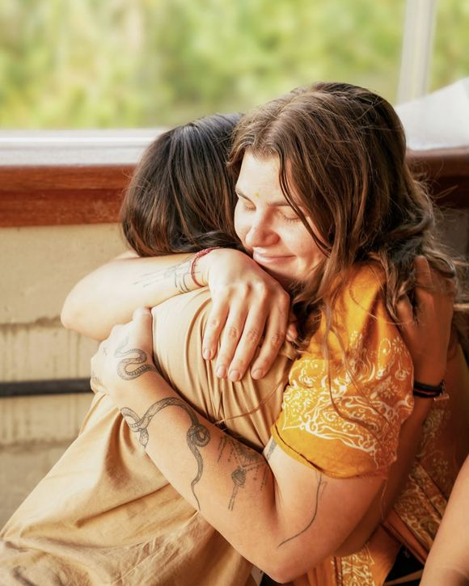
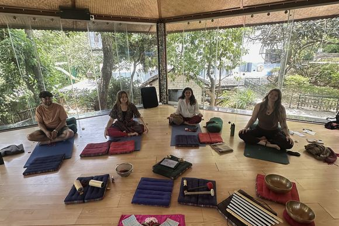

Transformation ist möglich.
Und die Grundlage dafür:
eine gesunde Beziehung zu Dir selbst.


Jahrelang habe ich mich und meinen Körper gehasst. Heute weiß ich:
Wir waren nie das wirkliche Problem!
Genau deshalb begleite ich Menschen hin zu einer liebevollen Beziehung zu sich selbst und ihrem Körper ~ damit von hier aus alles andere wachsen kann.
Somatische Prozessbegleitung & Atemarbeit
01 — Über mich
Stell dir vor, du wächst in einer augenscheinlich „ganz normalen Familie“ auf.
Haus, Garten, Schule, Urlaub.
Doch trotzdem hasst du dich selbst abgrundtief, seitdem du denken kannst.
Du kannst nicht anders, als ständig zu essen, schämst dich für deinen Körper und verstehst einfach nicht, warum du so viel schlimmer bist als alle anderen.
That’s the story of my life.
Trotz einer eigentlich schönen Kindheit hat schon immer „irgendetwas mit mir nicht gestimmt“. Fressanfälle. Mein Gewicht. Die Angst, aufzufallen. Depressive Phasen und Zeiten, in denen ich mir selbst weh tue und nicht mehr leben will. Drogen, emotionale Abhängigkeiten und der Zwang, mich selbst immer weiter zu optimieren.
Das alles unter dem Deckmantel einer Essstörung, für die ich mich selbst verurteile.
„Wenn ich es endlich hinkriegen würde, diszipliniert und dünn zu sein, dann wäre alles gut.“
Eine der größten Lügen, die uns unsere Gesellschaft erzählt und auch ich mir lange erzählt habe.
(Ich habe über 50 kg abgenommen und war trotzdem nicht glücklich. ;) )
Heute weiß ich: Ob Betäubung, Kontrolle, Rückzug oder Ablenkung: Egal zu welcher Überlebensstrategie wir greifen, es sind intelligente Mechanismen von unserem System, die uns helfen, mit Dingen klarzukommen.
-

-
-

-


All das bedeutet nicht, dass mit uns etwas nicht stimmt, sondern dass wir hinschauen dürfen, was dahinter eigentlich unsere Aufmerksamkeit braucht.
Das musste ich allerdings erst schmerzhaft lernen.
Mein Kartenhaus bricht in sich zusammen, als mein Papa, die einzig wirklich sichere Person in meinem Leben, viel zu früh aus dem Nichts stirbt. †
Doch gleichzeitig bricht in diesem schlimmsten Schmerz auch etwas auf.
Tief unter dieser Trauer beginnt ein Anteil zu rufen: „Hier steckt noch mehr dahinter.“
Zunächst ganz leise, doch ich folge ihm.
Ich beginne, mich selbst kennenzulernen, zu spüren. Reise. Coachings, Energiearbeit, eine Yogaausbildung. Mein erstes Praktikum im Coaching-Bereich.
Vieles ändert sich zum Positiven. Schnell sogar.
Doch gleichzeitig spüre ich: Irgendetwas sitzt da noch. Und ich verurteile mich immer noch dafür.
„Ich weiß, ich bin gut genug, nur warum fühle ich es nicht?!“
Deshalb entscheide ich mich für eine Ausbildung im Bereich Trauma, Nervensystem und somatische Arbeit.
Und tatsächlich: Nach fünf Wochen täglicher somatischer Arbeit mit mir selbst offenbart sich mir das letzte große Puzzleteil.
Nach über 20 Jahren erinnere ich mich daran, dass ein Mann aus dem Umfeld meiner Familie mich im Alter von fünf Jahren vergewaltigt hat.
Zunächst Schock, Zweifel, Unsicherheit.
Und dennoch die tiefe Gewissheit: Jetzt macht auf einmal alles Sinn.
Ich nehme mich der vermutlich lebenslangen Aufgabe an, dies aufzuarbeiten. Suche mir erneut Unterstützung. Lerne, darüber zu sprechen. Mich zu zeigen. Zu fühlen, was da ist, ohne wegzulaufen.
Mit Erfolg. Heute habe ich selbst in schwierigen Zeiten tief verinnerlicht, dass ich liebevoll zu mir selbst bleiben darf.
Und mit dieser liebevollen Beziehung zu mir selbst verstehe ich, dass mir die Vergewaltigung vor allem eins genommen hat: echte Verbindung zu anderen Menschen.
Wahrhaftig gesehen zu werden, war lebensgefährlich für mich geworden.
Dem stelle ich mich in meinem Breathwork Teacher Training und lerne:
Gesehen werden kann heute sicher sein.
Mit dieser Arbeit tauche ich noch tiefer, arbeite mit dem Kriegstrauma meiner Oma, das ich in mir trage, und lege Schichten ab, die älter als meine eigene Geschichte sind.
Du siehst, neben verschiedenen Ausbildungen prägt mich vor allem meine eigene Erfahrung.
Und genau darum geht es auch in meiner Arbeit: Vor allem begleite und halte ich Raum für deine Selbsterfahrung.
Und damit vorab eins klar ist: Du musst nichts Schlimmes erlebt haben, um hier richtig zu sein. Es reicht, wenn du mit etwas unzufrieden bist und es verändern willst.
„Nicht schlimm genug“ gibt es bei mir nicht, bzw. das schauen wir uns dann liebevoll in der gemeinsamen Arbeit an. ;)
02 — Meine Arbeit
Stell dir vor, du machst dir an einem aufregenden Tag zwischendurch dein Lieblingsgetränk und setzt dich für einen Moment gemütlich hin.
Eine innere Stimme sagt dir, dafür hättest du keine Zeit. Du umarmst sie gedanklich, schließt deine Augen und schenkst dir einen tiefen Atemzug. Mhhhhhhhhh.
Du spürst eine sprudelnde Energie in deinem Körper, fühlst dich lebendig, aber dennoch sicher. Es ist aufregend und manchmal herausfordernd, für die Dinge loszugehen, die dir wichtig sind. Doch gleichzeitig bist du tief im Vertrauen, dass du dich selbst liebevoll durch die Höhen und Tiefen deines Lebens begleiten kannst. Du bist stolz und dankbar. Und du freust dich auf dein Date mit dir selbst, das du dir für morgen eingeplant hast …
Genau das ist das Ziel meiner Arbeit: Dass du dich selbst, deinen Körper, dein Nervensystem, deine Emotionen und Energien kennst und spürst, was du brauchst. Dass du dich sicher in dir fühlst, dir selbst vertraust und weißt, dass du dir aus einer liebevollen Beziehung zu dir dein Leben kreierst.
Wie machen wir das?
Meine Arbeit ist kein klassisches Coaching, sondern eine Prozessbegleitung. Das bedeutet, in unseren gemeinsamen Räumen geht es darum, Referenzerfahrungen für dein System zu kreieren, durch die du lernst, dass heute neue Wege möglich sind.
Diese neuen Wege gilt es dann in realistischen Schritten auch im Alltag zu üben und umzusetzen, sodass du dir Stück für Stück eine neue Realität schaffen kannst.
Alles darf da sein und gefühlt werden, sodass es sich integrieren kann und seine unterbewusste Macht verliert.
Du bist genauso richtig, wie du bist, und von dort aus forschen wir gemeinsam, was es braucht. Ich halte dir den Raum, teile mein Wissen und meine Erfahrung, wir begegnen uns auf Augenhöhe.
Ich arbeite trauma-informiert und gerade im 1:1 sehr individuell. Wir schauen, was du in deiner Lebensrealität brauchst.
Grundsätzlich basiert meine Methode „Spirit of Body and Breath“ aber auf folgenden drei ineinandergreifenden Bereichen:
Spirit of Body and Breath
Tippe auf ein Feld, um zu erfahren, worum es darin geht.
Wähle ein Feld im Modell.
1
Körper & Nervensystem
Das Fundament besteht darin, überhaupt erstmal wieder eine Verbindung zu deinem Körper aufzubauen. Du lernst ihn wieder zu spüren und zuzuhören. Außerdem geht es darum, dein Nervensystem zu verstehen. Du lernst zu erkennen, wo du mit deinem Nervensystem gerade stehst, und dich darin zu navigieren. Dabei geht es nicht darum, immer ruhig und reguliert zu sein, sondern dir das zu geben, was du gerade wirklich brauchst. Dadurch brauchen wir es mit der Zeit immer weniger, zu ungesunden Mechanismen zu greifen.
1 + 2
Frieden mit deinen Themen
Ein tiefes Vertrauen: Du kannst dich und deine Themen halten. Du trägst niemals Schuld, aber übernimmst die Verantwortung.
2
Somatische Aufarbeitung
Hier schauen wir uns deine Geschichte und Themen an. Deine Verletzungen und Prägungen aus der Kindheit, deine heutigen Trigger, Bindungsmuster & Co. Wir lernen, alles zu spüren, zu halten und zu integrieren, sodass es seine unterbewusste Macht verliert. Ich arbeite hier vor allem gerne mit somatischer Arbeit und Atemarbeit. Darunter fällt die Arbeit mit Anteilen, Schatten, Chakren, unterdrückten Emotionen, deiner Stimme und vielem mehr. Immer entsprechend deiner Wünsche und Bedürfnisse.
2 + 3
Deine Aufgabe hier
In unseren Erfahrungen und Schmerzen liegen oft auch Leidenschaft und Potenzial. Was willst du wirklich aus deinem Leben machen?
3
Systembewusstsein
Wir sind eben nicht einfach nur wir, sondern Wesen, die ihr Leben lang in Systemen geprägt werden. Familiensysteme, Schulsysteme, Arbeitskontexte, gesellschaftliche Systeme wie Kapitalismus, Patriarchat, Neokolonialismus und viele mehr. All diese wirken tagtäglich auf uns und werden das auch weiterhin tun. Nur wenn wir lernen, dies zu erkennen, sind wir dem nicht mehr machtlos ausgeliefert.
1 + 3
Du in unserer heutigen Welt
Anstatt einfach nur zu funktionieren, lerne dich in den Systemen, die dich prägen, zu halten und zu navigieren.
1 + 2 + 3
Sicherheit & Selbstwert
Du in deiner unantastbaren Verbindung zu dir. Auch wenn nicht immer alles Friede, Freude, Eierkuchen sein wird: Du weißt, du kannst dich liebevoll halten und begleiten.
In meiner Arbeit liegt der Fokus darauf, vom Verstand in die Verkörperung zu kommen.
Wir wollen das, was wir oft schon wissen, eben auch wirklich im Hier und Jetzt lernen zu leben. Dennoch nehmen wir unseren wundervollen Kopf natürlich immer mit, eben so wie das, was sich manchmal jenseits von Worten zeigt, wenn du dafür offen bist.
Für die Nerds Somatische Arbeit & Breathwork erklärt
Mehr als alles andere lade ich dazu ein, diese Arbeit einfach mal auszuprobieren, denn sie will erfahren werden, nicht verstanden. Aber für die, die mehr wissen wollen, hier die Essenz:
Somatische Arbeit
Soma kommt aus dem Griechischen und bedeutet Körper. Somatische Arbeit ist Arbeit mit und über den Körper.
Dein Nervensystem prüft ständig, ob Du sicher bist. Man nennt das Neurozeption. Sie läuft schneller, als Du denken kannst, und ist geprägt von allem, was Du erlebt hast, und bewertet nicht objektiv.
Daraus entstehen Muster, die wie von einer unbewussten Festplatte abgespielt werden. Darum kannst Du etwas wissen und trotzdem anders handeln oder fühlen.
Das ist kein Fehler, sondern Körperintelligenz: Jedes Muster hatte einmal einen guten Grund, Dein Überleben.
Heute lernen Dein Körper und Dein Nervensystem nicht über mehr Argumente, sondern über neue Erfahrungen. Genau hier setzen wir an. Über Empfindungen, Fühlen, Bewegung, Atem und Stimme schaffen wir neue Erfahrungen von Sicherheit, die Dein System nach und nach abspeichert.
Möglich macht das die Neuroplastizität, die Fähigkeit des Nervensystems, sich durch Erfahrung zu verändern. Du kannst es Dir vorstellen, als würden wir Deine Festplatte updaten. Durch Wiederholung, in Deinem Tempo, und mit Strategien für Deinen Alltag.
Conscious Connected Breathwork
Hier atmest Du verbunden, ohne Pause zwischen Ein- und Ausatmen: durch die Nase ein, tief in den Bauch, hoch in die Brust und durch den Mund wieder aus.
Klingt simpel, ist es auch, zugleich aber äußerst kraftvoll.
Unsere Atemmuster spiegeln die Prägungen unseres Nervensystems. Wir begrenzen uns, indem wir unseren Atem begrenzen. Darf der Atem wieder frei fließen, kommt auch in Bewegung, was lange festgehalten wurde.
In der Atemarbeit beschreibt man, dass sich dabei der Zustand verändert: vom alltäglichen Denken (Beta-Wellen) hin zu tieferen Zuständen (Alpha und Theta), in denen der Zugang zu Gefühlen, Bildern und Erinnerungen leichter wird.
Der Atem ist eine der wenigen Körperfunktionen, die von allein laufen und die wir gleichzeitig bewusst lenken können. Eine Brücke zwischen Bewusstem und Unbewusstem, zwischen Körper und Geist. In vielen Traditionen gilt er als der älteste Lehrer, den es gibt: the Spirit of the Breath.
Diese Form der Atemarbeit passt nicht in jede Lebensphase, zum Beispiel nicht in der Schwangerschaft oder bei bestimmten Herz-Kreislauf-Themen. Das klären wir vorher gemeinsam ab.
Warum beides zusammen?
Die somatische Arbeit baut das Fundament, die Sicherheit im Körper. Der Atem öffnet die Tür zu dem, was darunter liegt.
Die Intelligenz des Körpers und die Kraft des Atems: Spirit of Body and Breath.
Mein Weg
Seit Anfang 2024 begleite ich Menschen und halte Räume. Das hat mich auf meinem Weg zu dieser Arbeit geprägt:
- Coachings und Kurse für meine eigene EntwicklungLernen, vor allem über Erfahrung. Denn jeder Weg beginnt bei uns selbst.
- Studium Internationale Beziehungen, Hochschule Rhein-WaalEin tiefes Verständnis dafür, wie sehr uns die Systeme prägen, in denen wir leben.
- Reisen in andere Länder und KulturenDie Erfahrung, dass Leben auch ganz anders gehen kann, als wir es im Westen gewohnt sind.
- Praktikum als Coachin und Beraterin bei Soul Food, Jackie FreitagErste Erfahrungen als Begleitung, selbst begleitet und im Team.
- 200 Stunden Multi-Style Yoga und Yin Yoga, Bhagsu Yoga Institute, IndienDer Beginn meiner tiefen Reise in den Körper.
- Reiki Grad 1, 2a und 2b, Bhagsu Yoga Institute, IndienDie energetische und spirituelle Ebene.
- Ausbildung zur traumainformierten Embodiment-Coachin, Soma Akademie (online)Ganzheitliche somatische Arbeit, fundiertes Wissen über das Nervensystem und das Halten von Online-Räumen.
- Conscious Connected Breathwork Facilitator, Evolution of Breath (300 Stunden, vor Ort in Indien)Räume, Sessions und Begleitungen vor Ort halten. Die Kraft des Atems.
Durch all das ist meine Arbeit heute kein typisches Coaching, sondern eine Reise zurück zu Dir.
Lass uns kennenlernen
Wenn Du neugierig geworden bist, starten wir ganz entspannt:
- Kurzer Kennenlern-Call (10 bis 20 Minuten)Unverbindlich. Wo stehst Du, wo willst Du hin, und passt es grundsätzlich? Ein kleiner Vibe-Check.
- Kostenlose Kennenlern-SessionWenn es sich für uns beide stimmig anfühlt und Du offen für eine längere Begleitung bist, schauen wir in einem zweiten Termin genauer hin. Und Du erlebst meine Arbeit direkt im Körper.
- Gemeinsame EntscheidungDanach entscheiden wir gemeinsam, ob wir den Weg zusammen gehen. Ohne Druck.
03 — Online-Begleitungen
Meine Online-Begleitungen erstrecken sich über einen längeren Zeitraum und richten sich an Menschen, die wirklich etwas verändern wollen.
Es geht darum umzusetzen, auszuprobieren, zu fühlen, dich selbst zu erfahren.
Meine Arbeit ist nicht für dich, wenn du dich berieseln lassen möchtest, auf der Suche nach einem „Quick Fix“ bist oder gerettet werden möchtest.
„Ich will Verantwortung für mich und meine Themen übernehmen und wünsche mir dabei einen gehaltenen Raum.“
03a — 1:1-Prozessbegleitung
Meine 1:1-Prozessbegleitung ist perfekt für dich, wenn du dich entscheidest, dich selbst endlich wirklich ernst zu nehmen.
In regelmäßigen Online-Sessions via Zoom gehen wir anhand meiner Methode „Spirit of Body and Breath“ deine Themen ganzheitlich an. (siehe hier)
Zwischen den Sessions bin ich via WhatsApp für dich da und wir checken regelmäßig miteinander ein.
Es gibt zusätzliche Materialien wie Audiotrainings, aufgezeichnete Sessions, Workbooks und andere Aufgaben. Wichtig ist hier: Es gibt kein allgemeines Schema X, das du durchläufst. Wir erforschen gemeinsam, was du genau brauchst und in welchem Tempo.
Mein Anspruch an mich selbst ist es, mit dir einen Raum zu kreieren, in dem du dich wahrhaftig gesehen fühlst und in dem ausnahmslos alles da sein darf. Genau hier liegt oft schon ein riesiger Teil der Heilung.

Lass uns kennenlernen
Wenn Du neugierig geworden bist, starten wir ganz entspannt:
- Kurzer Kennenlern-Call (10 bis 20 Minuten)Unverbindlich. Wo stehst Du, wo willst Du hin, und passt es grundsätzlich? Ein kleiner Vibe-Check.
- Kostenlose Kennenlern-SessionWenn es sich für uns beide stimmig anfühlt und Du offen für eine längere Begleitung bist, schauen wir in einem zweiten Termin genauer hin. Und Du erlebst meine Arbeit direkt im Körper.
- Gemeinsame EntscheidungDanach entscheiden wir gemeinsam, ob wir den Weg zusammen gehen. Ohne Druck.
03b — Online-Community
Kostenlos und unverbindlich
Heilung geschieht nicht allein.
So lange habe ich es alleine versucht, mir eingeredet, ich bräuchte niemanden, alleine geht es mir besser. Dabei war ich tief im Inneren einsam und Verbindung für mich einfach nicht sicher.
Heute weiß ich: Verbindung kann wieder sicher werden und ist kein Extra, sondern Teil der Arbeit.
Deshalb baue ich eine Community auf, in der wir uns begegnen und gemeinsam an der Arbeit dranbleiben. Sie entsteht gerade, heißt, du kannst von Anfang an mitgestalten.
Los geht’s ganz niederschwellig über WhatsApp: Wir stimmen dort Themen und Termine ab, und je nach Nachfrage entstehen Online-Breathwork- und Somatics-Sessions mit optionalen Sharings.
Kein Spam! Du landest erstmal nur im Ankündigungskanal, dort schreibe nur ich. Ob du den Austausch-Kanälen beitrittst, entscheidest du selbst. Die Community ist kostenfrei und unverbindlich. Du zahlst nur für Sessions, zu denen du dich anmeldest, und kannst jederzeit selbstständig austreten.
Ich bin gespannt, wohin das Ganze wächst.

04 — Offline-Angebote & Kooperationen
Ob im 1:1 oder in der Gruppe: Offline zu arbeiten, liebe ich am meisten.

Im selben Raum zu sitzen, gemeinsam zu atmen, uns wirklich zu begegnen. Das hat für mich noch mal eine ganz eigene Kraft.
Ich bin viel unterwegs und immer offen für Anfragen. Im Sommer bin ich meistens in Europa, oft in Deutschland (Raum Köln, Bielefeld und Berlin), aber auch in anderen Teilen Europas. Im Winter bin ich gerade in Indien, zu anderen Zeiten auch mal woanders.
Wo ich gerade bin, siehst Du auf meinem englischen Instagram-Profil @spiritofbodyandbreath. Schreib mir einfach, wir finden einen Weg.
04a — Offline-Sessions
1:1-Sessions
Wenn wir länger am selben Ort sind, begleite ich Dich gerne über mehrere Sessions vor Ort. Mit somatischer Arbeit, Breathwork oder beidem, gerne auch in Kombination mit einer Online-Begleitung. Einzelne 1:1-Sessions sind natürlich auch möglich.
Gruppensessions
Diese Formate halte ich in Gruppen:
- Somatic Shadow Work zu ganz unterschiedlichen Themen
- Somatisches Yin Yoga
- Breathwork
- Somatics und Breathwork in Kombination
- Female Rage Sessions
- Frauenkreise
04b — Retreat
In Planung
Offline in Verbindung zu gehen und uns gegenseitig wirklich in Präsenz zu spüren, ist noch mal etwas ganz anderes. Deshalb habe ich vor, ein Retreat zu hosten.
Ein Retreat ist für mich kein reines Wellness-Programm. Natürlich gibt es Zeit zum Entspannen, Runterkommen, Fühlen und einfach Sein. Und gleichzeitig machen wir die Arbeit gemeinsam, in Verbindung. Ein Raum, den wir zusammen vor Ort halten, ist dafür unglaublich kraftvoll.
Wann, wo und wie genau, steht noch nicht fest. Wenn Du Interesse hast, trag Dich ganz unverbindlich ein. Ich melde mich bei Dir, und Du kannst bei Zeit, Ort und Rahmen mitentscheiden.
04c — Kooperationen
Ich bin immer offen für Kooperationen: als Guest Facilitator auf Festivals, bei Retreats und Events oder um gemeinsam eine Session zu hosten. Jede Anfrage ist willkommen.
Das bringe ich mit:
- Somatic Shadow Work zu ganz unterschiedlichen Themen
- Somatisches Yin Yoga
- Breathwork
- Somatics und Breathwork in Kombination
- Female Rage Sessions
- Frauenkreise
Meine Sessions haben einen zeremoniellen Charakter, und ich gestalte sie nach Euren Wünschen und Themen.
Ab einer gewissen Gruppengröße besprechen wir gemeinsam, ob ich jemanden zum Co-Facilitaten mitbringe oder ob jemand vor Ort mit dabei ist. So sorgen wir dafür, dass der Raum gut und sicher gehalten ist.
Wenn es gerade akut ist
Meine Arbeit ersetzt keine Psychotherapie und keine ärztliche Behandlung. Wenn es dir gerade sehr schlecht geht, wende dich bitte an Menschen, die rund um die Uhr für dich da sind:
- Telefonseelsorge — 0800 111 0 111 und 0800 111 0 222, kostenlos, Tag und Nacht
- Bundesweites Info-Telefon Depression — 0800 33 44 533
- Essstörungen — Beratung der BZgA: 0221 89 20 411
- Im Notfall: 112 oder die nächste psychiatrische Klinik
Kontakt & Kennenlerncall
Lern mich unverbindlich kennen.
Ob Kennenlerncall, Warteliste, Community oder eine Offline-Session — sag mir einfach, worum es geht. Ich lese jede Nachricht selbst und melde mich innerhalb von zwei Werktagen bei dir.